On this page
- Abstract
- 1. Introduction
- 2. Mathematical model
- Equation for 𝐶
- Equation for 𝐶𝑟
- Equation for 𝐶𝑠
- Equation for 𝐷
- Equation for 𝐸
- Equation for 𝑊
- Equation for 𝐼
- Equation for 𝑉
- Equation for 𝐹
- or
- Equation for 𝑃
- 2.1. Boundary condition
- 2.2. Initial condition
- 2.3. Parameter estimation
- 3. Results
- 3.1. Fitness to experiments in Mukhtar et al. (2016), Guerrero et al. (2013)
- 3.2. Synergy between 𝑃 and 𝐹
- 3.3. Optimal scheduling of 𝑃 and 𝐹
- 4. Conclusion
- CRediT authorship contribution statement
- Declaration of competing interest
- Appendix A
- Appendix B
- Appendix C
- Article notes
- References
Abstract
Prostate cancer cells depend on androgen for their survival. A standard treatment of metastatic prostate cancer (mPC) is androgen deprivation treatment (ADT). However, after a period of remission, some cancer cells changed into androgen-independent cells, and then treatment proceeds with a combination of ADT and chemotherapy. Senescent cells are cells that stop dividing but sustain viability. Senescence cancer cells are common in cancer, and they affect cancer treatment negatively by secreting inflammatory cytokines and pro-cancer VEGF. In this paper, we include the effect of senescence in a model of mPC. We consider combinations of ADT, chemotherapy, and senolytic drug, which eliminate senescent cells, in a spatio-temporal partial differential equations model, and demonstrate that simulations of the model are in agreement with experimental results. We evaluate the synergy between different doses of chemotherapy and senolytic drugs, at different fixed doses of ADT. We also consider optimal scheduling of the drugs, and the hypothesis that, in optimal schedule, a senolytic drug is to be administered immediately following the chemotherapy drug.
1. Introduction
Prostate cancer is the second leading cause of cancer death in men in the United States, behind only lung cancer. American Cancer Society estimates that there will be 300,00 new cases in 2024 and about 32,500 deaths from prostate cancer. The majority of patients are diagnosed with cancer localized to the prostate and are treated with surgery and radiation therapy. But, if the cancer has metastasized, other therapies are needed. The standard treatment is androgen deprivation therapy (ADT). Prostate cells depend on androgen for their survival, and ADT inhibits androgen receptor by releasing hormones produced by the pituitary gland; this treatment is called medical castration. A commonly used ADT drug is Enzalutamide (ENZ). ADT provides remission of the disease, which at this state is called metastatic hormone sensitive prostate cancer (mHSPC). But after mean-time of 2–3 years, the disease progresses as cancer cells become androgen independent, i.e. castration resistant. This advanced state of the disease is called metastatic castration-resistant prostate cancer (mCRPC), and the mean survival time is only 16–18 months (Karantanos et al., 2013). The treatment for mCRPC includes, in addition to ADT, chemotherapy drugs such as Docetaxel (DTX) and Cabazitaxel (CBZ) (Sweeney et al., 2015; Park et al., 2023; Andren et al., 2017; Davis, 2022).
Cellular senescence is a state in which cells stop dividing but sustain viability. Senescence is a primary hallmark of aging; it is triggered by factors such as telomere alteration, epigenetic degradation, DNA damage, and mitochondria dysfunction. Senescence in cancer is primarily triggered by cell stress, tumor suppression of gene activation, and oncogene activity (Wyld et al., 2020).
Senescent cells in cancer may be either pro-cancer or anti-cancer (Wang et al., 2020; Huang et al., 2022). Senescent cells secrete senescence-associated secretory phenotype (SASP), a collection of proteins, some are anti-tumor and others are pro-tumor, depending on the specific tumor and its microenvironment (Wyld et al., 2020; Yang et al., 2021). Senescent cells have been reported in tumor mas of various cancers, including prostate cancer (Wyld et al., 2020).
IL-6, IL-8, and VEGF are highly expressed proteins in SASP of senescence prostate cancer cells (Pardella et al., 2022; Xu et al., 2024). IL-6 and IL-8 impair the activity of NK cells, and are positively correlated with prostate cancer progression (Katongole et al., 2022). In the sequel, we focus on the pro-cancer angiogenic effects of VEGF.
Senolytic drugs are drugs that selectively kill senescent cells. Desa-tinib, Quercetin, and fisetin are senolytic drugs used in experimental and clinical studies in cancer (Wyld et al., 2020; Malayaperumal et al., 0022-5193/© 2025 Elsevier Ltd. All rights are reserved, including those for text and data mining, AI training, and similar technologies.
2023). Fisetin is anti-angiogenesis, that is used in combination with chemotherapy in various cancers (Qaed et al., 2023), including mH- SPC (Pungsrinont et al., 2020; Lorenzo et al., 2022). In cancer, fisetin acts to reduce VEGF (Zhou et al., 2023). Indeed, in experimental paper (Takahashi et al., 2020), using fluorescence properties of fisetin bounding to VEGF, it was found that VEGF changed its structure, while also inducing dramatic changes in fisetin. Accordingly, we assume that fisetin interaction with VEGF results in a mutual reduction in both. In a mouse model inoculated with castration resistant prostate cancer cell, it was demonstrated, in Mukhtar et al. (2016), that combination of CBZ with fisetin is highly synergetic.
There are many mathematical models of prostate cancer but none of them addresses the presence of senescent cancer cells. A comprehensive 2020 review in Phan et al. (2020) included mostly models with ADT, and few treated with vaccine or immunotherapy. More recent papers are (Forys et al., 2022) with ADT, Salim et al. (2021) with curative vaccine, Zhang et al. (2022) with combination of ADT and chemotherapy, and Siewe and Friedman (2022) with treatment of mCRPC by combination of ADT, vaccine, and immunotherapy.
In this paper, we develop for the first time a mathematical model of mCRPC with treatment by combination of ADT (ENZ), chemotherapy (CBZ), and senolytic drug (fisetin). The model includes the following variables. Cancer cells (𝐶), senescent cancer cells (𝐶𝑠), castration-resistant (androgen-independent) cancer cells (𝐶𝑟), dendritic cells (𝐷), CD8+ 𝑇 cells (𝑇), endothelial cells (𝐸), VEGF (𝑉 ), oxygen (𝑊 ), Interleukin IL-12 (𝐼), the ADT ENZ (𝐴), chemotherapy CBZ (𝑃), and the senolytic drug fisetin (𝐹). Table 1 lists the model variables in densities with units of g∕cm3.
Cancer cells (𝐶) can become senescent cells (𝐶𝑠) or castration-resistant cells (𝐶𝑟); dendritic cells (𝐷) are activated by proliferating cancer cells (𝐶), and by proteins such as HMGB-1 from necrotic cancer cells. Activated dendritic cells secrete 𝐼12, which leads to activation of CD8+ 𝑇 cells (𝑇) (Henry et al., 2008) that kill cancer cells (𝐶) and 𝐶𝑟. On the other hand, cancer cells and senescent cancer cells (𝐶𝑠) secrete VEGF, which begins a process of angiogenesis by chemoattract-ing endothelial cells (𝐸) toward the tumor and by increasing their proliferation (Carmeliet, 2005; Ferre-Torres et al., 2023). Since the density of endothelial cells is proportional to the density of blood, and hence to the density of oxygen, secretion of VEGF increases the flow of oxygen (𝑊 ) into the cancer microenvironment, which enables the cancer to keep growing. Chemotherapy (𝑃) kills cancer cells (𝐶 and 𝐶𝑟) and 𝑇 cells (Das et al., 2020). ADT (𝐴) kills cancer cells, but some cells become senescent cells (Ewald et al., 2013; Blute et al., 2017; Kawata et al., 2017; Kallenbach et al., 2022) while others become castration-resistant (𝐶𝑟); although it was demonstrated in Carpenter et al. (2021) that some of these senescent cells may resume proliferation as 𝐶𝑟 cells, we shall not include this assertion explicitly in the model, since the end result of the effect of 𝐴 on 𝐶 is to increase both 𝐶𝑠 and 𝐶𝑟. CBZ kills 𝐶 and 𝐶𝑟 cells, but some of these cells become senescent cells (Wyld et al., 2020). Senolytic drug (𝐹) eliminates senescent cells (𝐶𝑠). Fig. 1 shows the network of interactions among the model variables.
The mathematical model is based on Fig. 1, and is represented by a system of partial differential equations (PDEs) within the tumor. We first show that the model predictions are in agreement with the experimental results, in Mukhtar et al. (2016), of mouse treatment with cabazitaxel and fisetin. We then use the model to assess the synergy between CBZ and fisetin. We also address the hypothesis that, in optimal schedules of treatments, fisetin is to be administered immediately after administration of CBZ.
2. Mathematical model
The model variables are listed in Table 1 in densities with units of g∕cm3.
The mathematical model is based on Fig. 1, and is represented by a system of PDEs within the tumor. The tumor region varies with time, and in order to solve the PDE system, we need to know how the unknown tumor boundary varies in time. To do that, we assume that the density of all the cells within the tumor region is constant in space and time, namely,
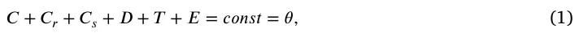
for some 0 < 𝜃 < 1. This assumption will be used to determine the dynamics of the ‘‘free’’ boundary of radially symmetric tumors. The movement of the tumor boundary and Eq. (1) imply a movement of cells that remain within the tumor; we assume that all these cells are moving with the same velocity⃖⃗𝑢. In addition, we also assume that all cells undergo dispersion (diffusion) with the same coefficient, 𝛿. Following these assumptions and the biological network presented in Fig. 1, each species of cells, denoted by 𝑋, satisfies an equation of the following form:
| Variable | Definition |
|---|---|
| C | Cancer cells |
| 𝐶𝑠 | Senescent cancer cells |
| 𝐶𝑟 | Castration-resistant cancer cells |
| D | Dendritic cells |
| T | CD8+ T cells |
| E | Endothelial cells |
| V | Vascular endothelial growth factor (VEGF) |
| W | Oxygen |
| I | Interleukin 12 (IL-12) |
| A | ADT drug, Enzalutamide (ENZ) |
| P | Chemotherapy drug, Cabazitaxel (CBZ) |
| F | Senlytic drug, fisetin |
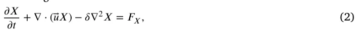
where 𝐹𝑋 is determined by the effect on 𝑋 of all the model variables, as indicated in Fig. 1.
An expression in 𝐹𝑋 of the form 𝜆𝑋 𝑌 𝐾+𝑌 (𝐾 constant depending on 𝑌) describes a process where species 𝑌 (e.g. proteins) is absorbed by cells 𝑋, at rate coefficient 𝜆. We denote the death rate (or degradation rate) of species 𝑋 by 𝑑𝑋. The dynamics of 𝑉 , 𝐼, and 𝑊 are similar to those of the cells. However, since their diffusion coefficients are much larger than those of cells (by several orders of magnitude), the effect of the velocity,⃖⃗𝑢, can be neglected.
We proceed to represent the biological network in Fig. 1 by a system of PDEs.
Equation for 𝐶
We write the equation for 𝐶 in the following form:
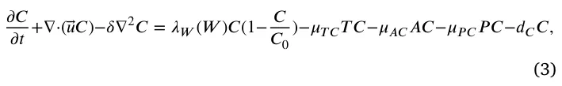
where the first term on the right-hand side represents a logistic growth, with carrying capacity 𝐶0, at oxygen-dependent rate {
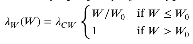
where 𝑊0 is the normal density of oxygen in tissue; we assume that cancer cells grow at a rate 𝜆𝐶 𝑊 if oxygen level is above 𝑊0, but the growth rate decreases if 𝑊 decreases below 𝑊0, so that, in particular, when 𝜆𝐶 𝑊 𝑊 ∕𝑊0 < 𝑑𝐶, 𝐶 is actually decreasing. The second term on the right-hand side of Eq. (3) accounts for the killing of cancer cells by 𝑇 cells, the third term represents the decrease in cancer cells by the hormone therapy ADT (ENZ, 𝐴), and the fourth term represents the decrease in cancer cells by CBZ (𝑃).
Equation for 𝐶𝑟
Under ADT some C-cells become castration resistant 𝐶𝑟-cells, which continue to proliferate but are killed by 𝑇 cells and 𝑃. We assume, that the killing rates of 𝐶 by 𝑇 and 𝑃 are the same as their killing rates of 𝐶𝑟. Hence,
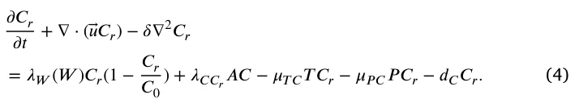
Equation for 𝐶𝑠
We write the equation for 𝐶𝑠 as follows:
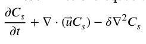
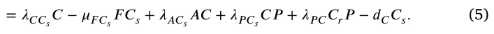
In the first term on the right hand side, 𝜆𝐶 𝐶𝑠 represents the rate by which cancer cells become senescent under cell stress and oncogene activity (Wyld et al., 2020). The second term on the right-hand side accounts for the elimination of senescent cells by the senolytic drug fisetin Wyld et al. (2020), Malayaperumal et al. (2023); the third term represents the fact that, under ADT, some C-cells become senescent cells, and the fourth and the fifth terms represent the rates by which, under chemotherapy 𝑃, 𝐶 and 𝐶𝑟 cells become senescent cells (Wyld et al., 2020). Chemotherapy kills the highly proliferating cancer cells during cell division; since senescent cells do not divide, we do not include a killing term of 𝐶𝑠 by 𝑃.
Equation for 𝐷
Inactive dendritic cells, 𝐷0, are activated by identifying special proteins on cancer cells. We view this activation process as an ‘‘eating’’ process by 𝐷0 of these special proteins whose density is proportional to the density of 𝐶, and because an eating process is limited by the available food, we represent the rate of 𝐷0 activation by the Michaelis–Menten law: 𝜆𝐷𝐷0 𝐶 𝐾𝐶+𝐶, where 𝜆𝐷 and 𝐾𝐶 are constants. Hence,
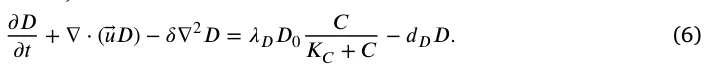
Equation for 𝑇
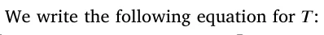
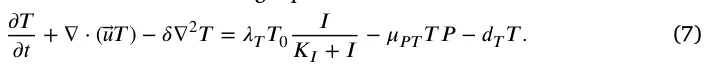
The first term on the right-hand side is the activation of inactive naive 𝑇 cells, 𝑇0, directly by 𝐼 (𝐼12) (Henry et al., 2008), but also indirectly as follows: 𝐼12 secreted by 𝐷 cells activate CD4+ 𝑇 cells of type Th1 (Henry et al., 2008), who secrete IL-2 (Viallard et al., 1999), which activates CD8+ 𝑇 cells (Niederlova et al., 2023). The second term on the right-hand side of Eq. (7) represents the killing of 𝑇 cells by the chemotherapy drug (Das et al., 2020).
Equation for 𝐸
VEGF (𝑉 ) promotes angiogenesis: it attracts endothelial cells, and it also increases their proliferation when 𝑉 is above a threshold level 𝑉0 (Carmeliet, 2005; Ferre-Torres et al., 2023). Hence,
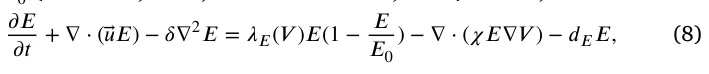
where 𝜒 is a chemotactic parameter, and 𝐸 proliferates with logistic growth at rate
Equation for 𝑊
The density of endothelial cells is proportional to the density of blood in tissue. Hence the concentration of oxygen from the blood can be written as follows:
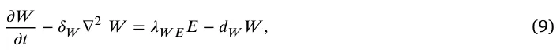
where 𝛿𝑊 is the diffusion coefficient of 𝑊 and 𝑑𝑊 is the consumption rate of oxygen by all cells from Eq. (1); we assume that 𝑑𝑊 is constant.
Equation for 𝐼
𝐼 is lost in the process of activating T. The binding process of 𝐼 proteins with receptors in 𝑇 cells is limited by receptor recycling time; we assume that the density of these receptors on 𝑇 cells is proportional to the density of 𝑇 cells. Hence, we express the binding rate of 𝐼 to 𝑇 by the Michaelis–Menten law: 𝑑𝑇 𝐼𝐼 𝑇 𝐾𝑇+𝑇 for some constants 𝑑𝑇 𝐼 and 𝐾𝑇, so that 𝜕 𝐼 𝑇 𝜕 𝑡 − 𝛿𝐼∇2𝐼 = 𝜆𝐼 𝐷𝐷 − 𝑑𝑇 𝐼𝐼 𝐾𝑇 + 𝑇 − 𝑑𝐼𝐼 , (10)
where 𝛿𝐼 is the diffusion coefficient of 𝐼, and 𝜆𝐼 𝐷 is the production rate of 𝐼 by 𝐷.
Equation for 𝑉
VEGF (𝑉 ) is secreted by 𝐶 and 𝐶𝑟, and also by 𝐶𝑠 (Pardella et al., 2022; Xu et al., 2024), at a rate that depends on the oxygen level, and fisetin reduces 𝑉 (Zhou et al., 2023; Takahashi et al., 2020); 𝑉 is also lost in the process of activating and increasing the proliferation of 𝐸. The equation for 𝑉 takes the following form:
𝜕 𝑉 𝜕 𝑡 − 𝛿𝑉 ∇2𝑉
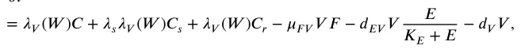
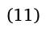
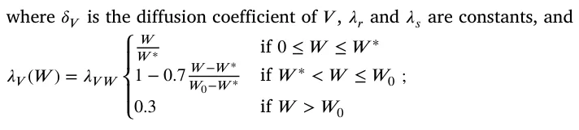
𝑊0 is the normal level of tissue oxygen, and 𝑊 ∗ is the hypoxia threshold of oxygen. Here we assume that 𝜆𝑉 (𝑊 ) is equal to 0.3 if 𝑊 is above the normal oxygen density 𝑊0, but it increases to 1 when the level of 𝑊 is decreased down to 𝑊 ∗ and cancer cells are then more ‘‘motivated’’ and able to secrete VEGF; however, when 𝑊 is below the hypoxia level 𝑊 ∗ (extreme hypoxia), their production of VEGF is impaired, and 𝜆𝑉 (𝑊 ) decreases as 𝑊 decreases.
Equation for 𝐹
The half-life rate of a drug 𝐵, 𝑡1∕2(𝐵), is the length of time it takes 𝐵 to decrease to half of its starting amount. Modeling the decrease process of 𝐵 by 𝑑 𝐵 𝑙 𝑛(2) 𝑑 𝑡 = −𝑑𝐵𝐵 , we get 𝐵(𝑡) = 𝑒−𝑑𝐵𝑡𝐵(0), so that 𝑑𝐵 = 𝑡1∕2(𝐵). Hence, if 𝐹 is administered at amount 𝛾𝐹 at times 𝑡1, 𝑡2, … , 𝑡𝑚, then the total injections level at any time 𝑡 can be represented by 𝛾𝐹𝑓𝐹 ,𝛼(𝑡), where:
or
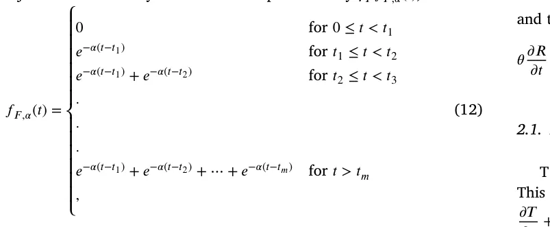
𝑙 𝑛(2) and 𝛼 = 𝑡1∕2(𝐹). Drug washout is the loss of the substance by excretion. Fisetin is decreased in the process of eliminating 𝐶𝑠 and in reducing 𝑉 (Zhou et al., 2023; Takahashi et al., 2020), at rates 𝜇𝐶𝑠𝐹 and 𝜇𝑉 𝐹, respectively. Hence, we write the equation for 𝐹 as follows:
𝜕 𝐹 𝜕 𝑡 − 𝛿𝐹∇2𝐹 = 𝛾𝐹𝑓𝐹 ,𝛼(𝑡) − 𝜇𝐶𝑠𝐹𝐶𝑠𝐹 − 𝜇𝑉 𝐹𝑉 𝐹 − 𝜇𝐹𝐹 , (13)
where 𝛿𝐹 is the diffusion coefficient of 𝐹, and 𝜇𝐹 is the washout rate of 𝐹.
Equation for 𝑃
Similarly, we write the equation of 𝑃 as follows:
𝜕 𝑃 𝜕 𝑡 − 𝛿𝑃∇2𝑃 = 𝛾𝑃𝑓𝑃 ,𝛽(𝑡) − 𝜇𝐶 𝑃𝐶 𝑃 − 𝜇𝐶 𝑃𝐶𝑟𝑃 − 𝜇𝑇 𝑃𝑇 𝑃 − 𝜇𝑃𝑃 , (14)
where 𝑃 is injected at amount 𝛾𝑃, and is consumed in the process of killing 𝐶, 𝐶𝑟 and 𝑇; 𝛿𝑃 is the diffusion coefficient of 𝑃, 𝜇𝑃 is the washout rate of 𝑃, and 𝑓𝑃 ,𝛽(𝑡) represents the protocol of injections at times 𝑡1, 𝑡2, … , 𝑡𝑛,
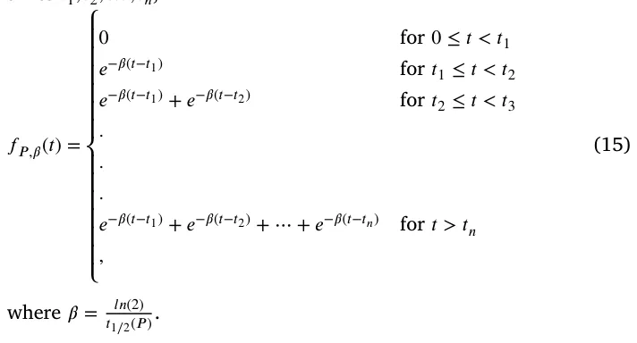
Equation for 𝐴
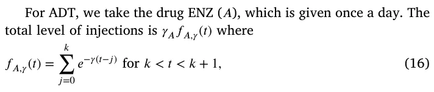
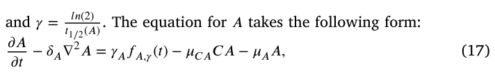
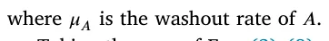
Taking the sum of Eqs. (3)–(8) and using Eq. (1), we get:
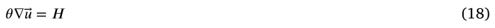
where 𝐻 is the sum of the right-hand side of Eqs. (3)–(8). In the radially symmetric case, where⃖⃗𝑢 is a given by a scalar function, 𝑢(𝑟, 𝑡), Eq. (18) becomes:
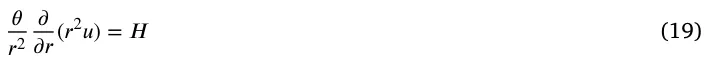
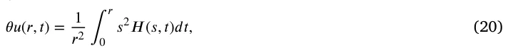
and the tumor radius 𝑟 = 𝑅(𝑡) satisfies the following equation:
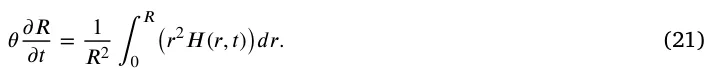
2.1. Boundary condition
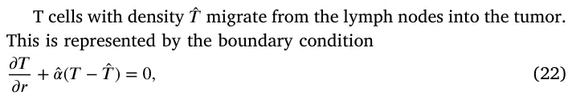
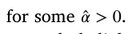
Endothelial cellŝ 𝐸 are attracted by VEGF into the tumor; we represent the influx of 𝐸 by the boundary condition
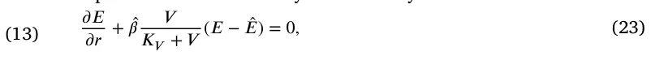
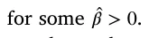
The exchange between oxygen from outside the tumor (𝑊0) and inside the tumor (𝑊 ) is represented by the boundary condition
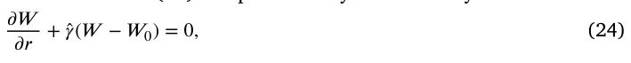
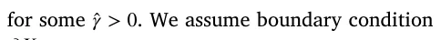
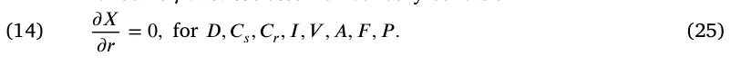
The boundary condition for 𝐶 is derived from Eq. (1), namely, 𝐶 = 𝜃 − 𝐶𝑟 − 𝐶𝑠 − 𝐷 − 𝑇 − 𝐸
2.2. Initial condition
We take the following initial conditions in units of g∕cm3:
𝐷 = 2 ⋅ 10−4, 𝑇 = 0.5 ⋅ 10−3, 𝐸 = 4 ⋅ 10−3, 𝑊 = 1.4 ⋅ 10−4, 𝑉 = 2 ⋅ 10−8, 𝐼 = 4 ⋅ 10−10, 𝐶𝑟 = 0.1𝐶 , 𝐶𝑠 = 0.1𝐶 , 𝐶 = 𝜃 − 𝐶𝑟 − 𝐶𝑠 − 𝐷 − 𝑇 − 𝐸 , and 𝐹 = 𝑃 = 𝐴 = 0.
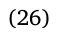
We take 𝑅(0) = 0.05 cm. We assume that moderate changes in the initial conditions will not qualitatively change the model simulations after a few days.
2.3. Parameter estimation
The computational methods are based on the Runge–Kutta scheme with moving mesh, as will be explained in Appendix 𝐼. In order to estimate some model’s parameters, we use genetic algorithm (GA) coupled with the Monte Carlo (MC) process; this combined MCGA scheme will be explained in Appendix 𝐼 𝐼. Sensitivity analysis of model’s parameters is performed in Appendix 𝐼 𝐼 𝐼.
Some of the parameters have already been estimated in previous publications, as indicated in Table 2, while others, indicated by ‘‘this work’’, are assumed for this paper.
The half-life of senescent cells is 12–24 h (Fan et al., 2020). Taking it to be approximately 16 h, we get 𝑑𝐶𝑠 = 𝑙 𝑛(2) 0.75 = 0.92∕d. We assume that the fraction 𝐶𝑠∕𝐶 varies from 5% to 20%, and take its average to be 10%. Hence, from the steady state of the control case, 𝜆𝐶 𝐶𝑠𝐶 = 𝑑𝐶𝑠𝐶𝑠, we get 𝜆𝐶 𝐶𝑠 = 𝑑𝐶𝑠 𝐶𝑠 𝐶 = 0.092∕d.
The half-life of fisetin, 𝑡1∕2(𝐹), is 3 h (Alzheimer’s Drug Discovery 𝑙 𝑛(2) Foundation, 2018; Zhu et al., 2017). Hence, 𝛼 = 𝑡1∕2(𝐹) = 𝑙 𝑛(2) 1∕8 = 5.32∕d.
The half-life of cabazitaxel is 95 h (JEVTANA, 2010). Hence, 𝛽 = 𝑙 𝑛(2) 𝑡1∕2 (𝑃) = 𝑙 𝑛(2) 3.96 = 0.174∕d. The half-life of oral enzalutamide is 5.8 days (Gibbons et al., 2015), hence 𝛾 = 𝑙 𝑛(2) 5.8 = 0.12∕d.
Some of the remaining parameters to be estimated will be determined by fitting the model simulations of tumor-volume growth to experimental results in Mukhtar et al. (2016) in mouse inoculated with castration resistant prostate cancer cells. In Mukhtar et al. (2016), mice are treated with fisetin of 20 mg/kg, 3 times each week (e.g., Monday, Wednesday, Friday), and with CBZ at 5 mg/kg once a week (e.g. Monday). The average weight of a laboratory mouse is 32 g. Assuming that 1 cm3 of tissue has average mass of 1 g, we find that 1 mg∕k g = 3.2 ⋅ 10−5 gm∕cm3, 𝛾𝐹 = 32 ⋅ 20 ⋅ 10−6 = 6.4 ⋅ 10−4 cm3∕g d, and 𝛾𝑃 = 32 ⋅ 5 ⋅ 10−6 = 1.6 ⋅ 10−4 cm3∕g d.
We take the washout rate of all drugs to be 𝜇𝐹 = 𝜇𝑃 = 𝜇𝐴 = 2.
We introduce a ‘‘sub-model’’ of our model, which fits the experimental study in Mukhtar et al. (2016). This means that we set 𝐶 = 0, 𝐴 = 0 in our model, in Eq. (5) for 𝐶𝑠 we introduce a production term 𝜆𝐶𝑟𝐶𝑠𝐶𝑟 with 𝜆𝐶𝑟𝐶𝑠 = 0.09∕d, in Eq. (6) we replace 𝐶 by 𝐶𝑟, and we also take initial condition 𝐶𝑟 = 𝜃 − 𝐶𝑠 − 𝐷 − 𝑇 − 𝐸.
We begin to estimate the remaining parameters of the sub-model by using the ‘‘steady state’’ condition, namely, by equating to zero the right-hand sides of the sub-model equations. We assume that in steady 𝑋 state, 𝐾𝑋+𝑋 = 1 2overrightarrow, or 𝑋 = 𝐾𝑋 for all species; 𝐾𝑋 is called the ‘‘half-saturation’’ of 𝑋. We temporally fix the unknown parameters 𝜆𝐹, 𝜆𝑃 at 𝜆𝐹 = 4.10, 𝜆𝑃 = 2.96, and this will be used to determine the ‘‘steady state’’ values of all other parameters. We also assume that in ‘‘steady state’’, 𝛾𝐹𝑓𝐹 ,𝛼 = 𝜆𝐹𝐹 and 𝛾𝑃𝑓𝑃 ,𝛽 = 𝜆𝑃𝑃, for some parameters 𝜆𝐹, 𝜆𝑃. Since the ‘‘steady state’’ assumption does not actually exist, the parameters that have been estimated under this condition need to be made more precise. These parameters include the production parameters in the control case
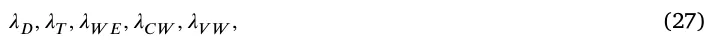
and the production and degradation parameters
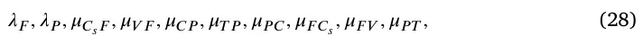
associated with the drugs 𝐹 and 𝑃. All these parameters will be estimated by fitting the tumor volume profiles in the control case and in the three case treatments by 𝐹, by 𝑃, and by 𝐹 + 𝑃, to the four corresponding tumor profiles in the mouse model (Mukhtar et al., 2016) (Fig. 4). 𝐹 is administered orally in capsules or tablets (Underwood, 2023), and 𝑃 is administered intravenously (Anon, 2024a).
From the steady state of Eq. (6) in the control case, we get 0.5𝜆𝐷𝐷0 = 𝑑𝐷𝐾𝐷. Hence, 𝜆𝐷 = 2𝑑𝐷𝐾𝐷 = 4∕d, and by MCGA we get 𝜆𝐷 = 1.47∕d. 𝐷0 From the steady state of Eq. (7) in the control case, we get 0.5𝜆𝑇𝑇0 = 𝑑𝑇𝐾𝑇, so that 𝜆𝑇 2𝑑𝑇𝐾𝑇 = 1.8∕d, and by MCGA fitting, we get = 𝑇0 𝜆𝑇 = 1.47∕d.
With 𝑉 ≥ 𝑉0, the steady state of Eq. (8) takes the form 𝜆𝐸 𝑉 𝑉 𝐸(1 − 𝐾𝐸 𝐸0 ) = 𝑑𝐸𝐸, where 𝐾𝐸∕𝐸0 = 0.5. Hence, 𝜆𝐸 𝑉 = 2𝑑𝐸 𝐾𝑉 = 1.87 ⋅ 107∕d.
From the steady state of Eq. (9), 𝜆𝑊 𝐸𝐸 = 𝑑𝑊 𝑊 , so that 𝜆𝑊 𝐸 = 𝐾𝑊 𝑑𝑊 𝐾𝐸 = 7.4 ⋅ 10−2∕d, and by MCGA fitting we get 𝜆𝑊 𝐸 = 9.45 ⋅ 10−2. Eq. (10) in steady state can be written as follows: 𝜆𝐼 𝐷𝐷 = (0.5𝑑𝑇 𝐼 + 𝑑𝐼)𝐼. We take 𝑑𝑇 𝐼 = 2𝑑𝐼 = 2.76∕d, and then, 𝜆𝐼 𝐷 = 2𝑑𝐼𝐾𝐼 = 5.52⋅10−6∕d. 𝐾𝐷 From the steady state of Eq. (11) in the control case, with 𝜆𝑉 (𝑊 ) ∼ 𝜆𝑉 𝑊 ⋅ 0.2, we get 0.2𝜆𝑉 𝑊 (𝐶𝑟 + 𝜆𝑠𝐶𝑠) = (0.5𝑑𝐸 𝑉 + 𝑑𝑉 )𝑉 . Taking 𝑑𝐸 𝑉 = 2𝑑𝑉 = 25.2∕d, recalling that 𝐶𝑠 = 0.1𝐶𝑟 in steady state, and choosing 𝜆𝑠 = 5, we get 𝜆𝑉 𝑊 = 2𝑑𝑉 𝐾𝑉 0.2𝐾𝐶⋅1.5 = 1.47 ⋅ 10−7∕d and by MCGA fitting we get 𝜆𝑉 𝑊 = 2.44 ⋅ 10−7∕d.
If 𝑊 ≥ 𝑊0, the steady state of Eq. (7) gives the relation 0.5𝜆𝐶 𝑊 = 𝜇𝑇 𝐶𝐾𝑇 + 𝑑𝐶 = 0.6. But this value of 𝜆𝐶 𝑊 needs to be increased, since the cancer continues to grow in the no-drug case even if 𝑊 is below 𝑊0. We take 𝜆𝐶 𝑊 = 1.7∕d, and by MCGA fitting we get 𝜆𝐶 𝑊 = 1.49∕d.
Eqs. (13)–(14) in steady state take the following form: 𝜆𝐹 = 𝜇𝐶𝑠𝐹𝐶𝑠 + 𝜇𝑉 𝐹𝑉 + 2 (with 𝐶𝑠 = 0.1𝐶) and 𝜆𝑃 = 𝜇𝐶 𝑃𝐶𝑟 + 𝜇𝑇 𝑃𝑇 + 2.
We assume that 𝜇𝐶𝑠𝐹𝐶∕10 = 𝜇𝑉 𝐹𝑉 in steady state, so that, with 𝐶 = 𝐾𝐶 and 𝑉 = 𝐾𝑉 we get 2 ⋅ 0.04𝜇𝐶𝑠𝐹 = 2 ⋅ 7 ⋅ 10−8𝜇𝑉 𝐹 = 𝜆𝐹 − 2. Hence, 𝜇𝐶𝑠𝐹 = 12.5(𝜆𝐹 − 2) cm3∕g d and 𝜇𝑉 𝐹 = 7.4 ⋅ 10−6(𝜆𝐹 − 2) cm3∕g d, and by MCGA fitting 𝜇𝐶𝑠𝐹 = 9.15(𝜆𝐹 − 2) cm3∕g d and 𝜇𝑉 𝐹 = 4.1 ⋅ 106(𝜆𝐹 − 2) cm3∕g d. Thus, 𝜇𝐶𝑠𝐹 = 2.59 ⋅ 101 cm3∕g d and 𝜇𝑉 𝐹 = 1.03 ⋅ 107 cm3∕g d. Similarly we assume that 𝜇𝐶 𝑃𝐶 𝑃 = 𝜇𝑇 𝑃𝑇 so that 2 ⋅0.4𝜇𝐶 𝑃 = 2 ⋅10−3𝜇𝑇 𝑃 = 𝜆𝑃 − 2; hence 𝜇𝐶 𝑃 = 1.25(𝜆𝑃 − 2) cm3∕g d and 𝜇𝑇 𝑃 = 5⋅102(𝜆𝑃 − 2) cm3∕g d, and by MCGA fitting 𝜇𝐶 𝑃 = 1.84(𝜆𝑃 − 2) cm3∕g d and 𝜇𝑇 𝑃 = 3.2(𝜆𝑃 − 2) cm3∕g d. Thus, 𝜇𝐶 𝑃 = 1.38 cm3∕g d and 𝜇𝑇 𝑃 = 2.45 cm3∕g d.
Fisetin eliminates senescent cells at rate 𝜇𝐹 𝐶𝑠 and removes VEGF at rate 𝜇𝐹 𝑉 . We take 𝜇𝐹 𝑉 𝑉 𝐹 = 𝜇𝐹 𝐶𝑠𝐶𝑠𝐹 in steady state or 7 ⋅ 10−8𝜇𝐹 𝑉 = 0.04𝜇𝐹 𝐶𝑠.
We assume that 𝜇𝑃 𝑇𝑃 = 0.105𝑑𝑇 in steady state, so that 𝜇𝑃 𝑇 = 5.55 and by MCGA 𝜇𝑃 𝑇 = 4.78 ⋅ 101. Note that 𝜇𝑃 𝐶 > 𝜇𝑃 𝑇, which is as it should be, since 𝐶 divides at faster rate than 𝑇.
In order to determine 𝜇𝑃 𝐶 and 𝜇𝐹 𝐶𝑠, from the steady states of Eqs. (3) and (4), we need to have estimates for ‘‘steady state’’ of 𝑃 and 𝐹, which we do not have. Assuming that 𝑃 ∼ 𝑂(𝛾𝑃∕𝜆𝑃), 𝐹 ∼ 𝑂(𝛾𝐹∕𝜆𝐹), we chose some values, from which we get, in ‘‘steady state’’ of Eqs. (3) and (4), 𝜇𝑃 𝐶 = 4.7 ⋅ 102 and 𝜇𝐹 𝐶𝑠 = 3.0 ⋅ 105. By MCGA we get 𝜇𝑃 𝐶 = 7.01 ⋅ 102, 𝜇𝐹 𝐶𝑠 = 2.94 ⋅ 105, and then also 𝜇𝐹 𝑉 = 1.37 ⋅ 101.
The MCGA output gave us, in particular, 𝜆𝐹 = 5.0 and 𝜆𝑃 = 2.82. Recalling that 𝜇𝐴 = 2∕d and 𝛾 = 1.2∕d, we proceed to estimate the remaining parameters that are associated with ENZ (𝐴), which is administered orally in tablets or capsules (Anon, 2024b), namely
𝜆𝐴𝐶𝑠, 𝜆𝐶 𝐶𝑟, 𝜇𝐴𝐶, 𝜆𝐶 𝐴. (29)
We assume that 𝜆𝐴𝐶𝑠 = 1∕20𝜇𝐴𝐶, 𝜆𝐶 𝐶𝑟 = 1∕60𝜇𝐴𝐶 and that 𝜇𝑇 𝐶 < 𝜇𝐴𝐶 < 𝜇𝑃 𝐶. Taking 𝜇𝐴𝐶 = 600 cm3∕g d, we get 𝜆𝐴𝐶𝑠 = 30 cm3∕g d, 𝜆𝐶 𝐶𝑟 = 10 cm3∕g d. We also assume that 𝜇𝐶 𝐴 = 𝜇𝐶 𝑃, so that 𝜇𝐶 𝐴 = 1.38 cm3∕g d. We next improve the values of the parameters in Eq. (29) by fitting model simulations to the experimental results in Guerrero et al. (2013). In Guerrero et al. (2013), mice were first inoculated with castration-resistant prostate cancer cells, and 5 days later were administered with androgen-dependent prostate cancer cells. Mice were then given daily gavage of ENZ for 28 days, at 1mg/kg (group 1), 10 mg/kg (group 2), and 50 mg/kg (group 3); (i.e. 3.2 ⋅10−5, 3.2 ⋅10−4, and 1.6 ⋅10−3 g∕cm3).
In Guerrero et al. (2013) mice were inoculated with 𝐶𝑟 at day 𝑡 = −5, and 5 days later, at 𝑡 = 0, were inoculated with ADT. Hence, the control case in our model is different from the control case in Guerrero et al. (2013), but we slightly bridge the gap by taking 𝐶𝑟(0) 𝐶(0) = 𝜎 for some 0 < 𝜎 < 1. We take 𝜎 = 0.1 (to be consistent with initial conditions for 𝐶 and 𝐶𝑟 in Eq. (26)), and the values of the parameters in Eq. (29) estimated above, and we use the MCGA method for fitting to Guerrero et al. (2013) (Fig. 3). We found that 𝜆𝐴𝐶𝑠 = 3.92⋅101, 𝜆𝐶 𝐶𝑟 = 1.06 ⋅ 10−1, 𝜇𝐴𝐶 = 9.13 ⋅ 102, 𝜇𝐶 𝐴 = 9.7 ⋅ 10−1, and 𝜎 = 0.136.
3. Results
The proposed model, described by Eqs. (3)–(11), is a system of second-order nonlinear partial differential equations with a free boundary in a spherical geometric configuration. This model can be numerically solved using the Runge–Kutta method (Verwer and Sommeijer, 2004). All numerical analyses in this study were conducted using the Python programming language (Langtangen and Logg, 2016). The code to solve the model is provided in the project’s Github repository: https: //github.com/teddy4445/adt_chemo_senlytic_model.
3.1. Fitness to experiments in Mukhtar et al. (2016), Guerrero et al. (2013)
In this section, we describe in detail the treatments used in Mukhtar et al. (2016), Guerrero et al. (2013), which we precisely followed in our simulations, in order to estimate some of model’s parameters by fitting to the experimentally derived volume profiles in Mukhtar et al. (2016), Guerrero et al. (2013). In Mukhtar et al. Mukhtar et al. (2016), mice inoculated with castration-resistant prostate cancer cells (CRPC) were injected with fisetin every week on Monday, Wednesday, and Friday, and with Cabazitaxel once a week on Monday, for 7 weeks. In Mukhtar et al. (2016) (Fig. 4) tumor volumes were displayed in the control case, with 𝐹 and 𝑃 as single agents, and with 𝐹 + 𝑃. Using the same treatment data, we used our model to simulate the tumor volume in all four cases. Fig. 2 shows the comparison of our simulations with the experimental profiles in Mukhtar et al. (2016) (Fig. 4). Computing the coefficients of determination (𝑅2) that serves as a measure of goodness of fitness between the simulated and experimental profiles, we found that 𝑅2 = 0.936 in the control case, 𝑅2 = 0.909 for 𝐹, 𝑅2 = 0.918 for 𝑃, and 𝑅2 = 0.915 for 𝐹 + 𝑃.
In Guererro et al. Guerrero et al. (2013), mice were inoculated with CRPC cells, and, 5 days later, with androgen-dependent prostate cancer cells. Mice were then treated daily with ENZ, for 28 days, with 1 mg/kg (group 1), 10 mg/kg (group 10), 50 mg/kg (group 3). Fig. 3 A in Guerrero et al. (2013) shows tumor volume profiles in the control case and the three treated groups. Our model simulation in Fig. 3 shows a comparison with (Guerrero et al., 2013) (Fig. 3 A). The fitness in the control case is weak (𝑅2 = 0.710) which is not surprising, since the control case generated in Guerrero et al. (2013) is different from the control case in our model, as explained above. Nonetheless, as the dose of ENZ increases, the fitness between our model and Guerrero et al. (2013) (Fig. 3 A) improves, and the coefficient of determination are 𝑅2 = 0.908 for group 2 (10 mg/kg) and 𝑅2 = 0.915 for group 3 (50 mg/kg).
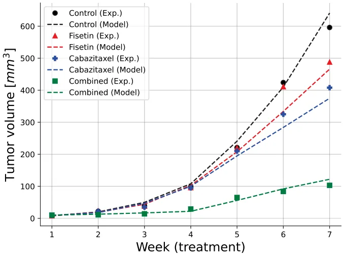
3.2. Synergy between 𝑃 and 𝐹
When evaluating the effectiveness of multiple drugs, it is important to include a synergy score to assess their combined effect; such a score would strengthen the analysis of the treatments’ efficacy. In this section, we derive a synergy score for a combination of 𝑃 and 𝐹, for three different doses of ADT, and display it in color maps.
For any fixed dose 𝛾𝐴 of ADT, we denote by 𝑉 𝛾𝑃, 𝛾𝐹, for any fixed doses 𝛾𝑃, 𝛾𝐹, the tumor volume at end-time of 10 weeks under treatment by 𝛾𝐴, 𝛾𝑃, 𝛾𝐹, where 𝑓𝐹 ,𝛼(𝑡) = 𝑓𝑃 ,𝛽(𝑡) = 𝐹𝐴,𝛾(𝑡) = 1, and define the efficacy of the treatment by
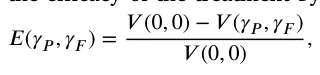
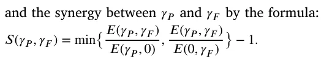
If 𝑆(𝛾𝑃, 𝛾𝐹) > 0 then the efficacy of the combination 𝛾𝑃 + 𝛾𝐹 is larger than the efficacy of both 𝛾𝑃 and 𝛾𝐹, so that the two drugs are in synergetic relation. If 𝑆(𝛾𝑃, 𝛾𝐹) < 0, then the efficacy of the combination 𝛾𝑃 + 𝛾𝐹 is smaller than the efficacy of either 𝛾𝑃 or 𝛾𝐹, or both, so that at least one of the drugs is antagonistic to the other.
Fig. 4 shows three color maps of synergy for ADT dose: 𝛾𝐴 = 1𝑚𝑔∕𝑘𝑔 = 3.2 ⋅ 10−5 g∕cm3, 10𝛾𝐴, and 50𝛾𝐴, as used in Guerrero et al. (2013). The doseŝ 𝛾𝑃 and̂ 𝛾𝐹 vary between 0.5 and 1.5 of the doses of 𝛾𝑃 = 1.6 ⋅10−4, 𝛾𝐹 = 6.4 ⋅10−4 g∕cm3, which were used in Mukhtar et al. (2016). We see that in the case of 𝛾𝐴, the synergy 𝑆(̂𝛾𝑃, ̂𝛾𝐹) is always positive, and it increases when̂ 𝛾𝑃 and̂ 𝛾𝐹 increase. In the case of 10𝛾𝐴, 𝑆(̂𝛾𝑃, ̂𝛾𝐹) increases when̂ 𝛾𝐹 increase, but for some small values of̂ 𝛾𝐹 there is an interval of̂ 𝛾𝑃 values where the synergy decreases when̂ 𝛾𝑃 is increasing; this is easily deduced from the concave curves of equi-synergy corresponding to 0.1. In the case of 50𝛾𝐴, synergy increases aŝ 𝛾𝑃 and̂ 𝛾𝐹 increase, but the synergy is negative for small values of̂ 𝛾𝑃 and̂ 𝛾𝐹. These somewhat surprising differences in the synergy dependence on the dose of 𝐴, apparently result from the facts that 𝐴 and 𝑃 work in the same direction in Eq. (3) for 𝐶, that 𝐴 and 𝑃 work in a reverse direction in Eq. (4) for 𝐶𝑟, and that 𝐴 works in the same direction as 𝑃 and in reverse direction to 𝐹 in Eq. (5) for 𝐶𝑠. We note that the maximum synergy score 𝑆(1.5𝛾𝑃, 1.5𝛾𝐹) is increasing from 0.2 for 𝛾𝐴 to 0.3 for 10𝛾𝐴, and to 0.5 for 50𝛾𝐴.
| Parameter | Description | Value | Reference |
|---|---|---|---|
| 𝛿 | Diffusion coefficient of cells | 8.64 ⋅10−3 cm2∕d | Lai et al. (2018) |
| 𝛿𝑊 | Diffusion coefficient of oxygen | 0.8 cm2∕d | Lai and Friedman (2019) |
| 𝛿𝐼 | Diffusion coefficient of 𝐼12 | 6.05 ⋅10−2 cm2∕d | Lai and Friedman (2017) |
| 𝛿𝑉 | Diffusion coefficient of VEGF | 8.64 ⋅10−2 cm2∕d | Liao et al. (2014) |
| 𝑑𝐶 | Death rate of cancer cells | 0.1 d | Lai and Friedman (2019) |
| 𝑑𝐶𝑠 | Death rate of senescent cancer cells | 0.92 d | Friedman and Hao (2018) |
| 𝑑𝐷 | Death rate of dendritic cells | 0.1 d | Hao and Friedman (2016) |
| 𝑑𝑇 | Death rate of CD8+ T cells | 0.18 d | Hao and Friedman (2016) |
| 𝑑𝐸 | Death rate of endothelial cells | 0.69 d | Chen et al. (2012) |
| 𝑑𝑊 | Takeup rate of oxygen by cells | 1.04 d | Lai and Friedman (2019) |
| 𝑑𝐼 | Degradation rate of 𝐼 𝐿− 12 | 1.38 d | Friedman and Hao (2018) |
| 𝑑𝑉 | Degradation rate of VEGF | 12.6 d | Hao and Friedman (2016) |
| 𝐶0 | Carrying capacity of 𝐶 | 0.8 g∕cm3 | Hao and Friedman (2016) |
| 𝐸0 | Carrying capacity of 𝐸 | 5 ⋅10−3 g∕cm3 | Friedman and Hao (2018) |
| 𝐷0 | Density of immature dendritic cells | 2 ⋅10−5 g∕cm3 | Friedman and Hao (2018) |
| 𝑇0 | Density of naive T cells | 2 ⋅10−4 g∕cm3 | Friedman and Hao (2018) |
| 𝑊0 | Normal density of oxygen in tissue | 4.65 ⋅10−4 g∕cm3 | Chen et al. (2012) |
| 𝑊∗ | Threshold of hypoxia | 1.69 ⋅10−4 g∕cm3 | Chen et al. (2012) |
| 𝑉0 | Threshold VEGF concentration | 3.65 ⋅10−10 g∕cm3 | Hao and Friedman (2016) |
| 𝜒 | Chemotartic parameter | 0.8 cm5∕g d | Chen et al. (2012) |
| 𝜃 | Total density of cells | 0.406 g∕cm3 | Lai and Friedman (2019) |
| 𝐾𝐶 | Half-saturation of 𝐶 | 0.4 g∕cm3 | Lai and Friedman (2017) |
| 𝐾𝐷 | Half-saturation of 𝐷 | 4 ⋅10−4 g∕cm3 | Lai and Friedman (2019) |
| 𝐾𝑇 | Half-saturation of 𝑇 | 1 ⋅10−3 g∕cm3 | Lai and Friedman (2019) |
| 𝐾𝐸 | Half-saturation of 𝐸 | 2.5 ⋅10−3 g∕cm3 | Hao and Friedman (2016) |
| 𝐾𝑊 | Half-saturation of 𝑊 | 1.69 ⋅10−4 g∕cm3 | Hao and Friedman (2016) |
| 𝐾𝐼 | Half-saturation of 𝐼12 | 8 ⋅10−10 g∕cm3 | Slewe and Friedman (2022) |
| 𝐾𝑉 | Half-saturation of 𝑉 | 7 ⋅10−8 g∕cm3 | Hao and Friedman (2016) |
| 𝜆𝐶 𝑊 | Growth rate of cancer cells | 1.49 ∕d | Estimated by fitting |
| 𝜆𝐶 𝐶𝑠 | Production rate of 𝐶𝑠 | 0.092 ∕d | Estimated |
| 𝜆𝐷 | Production of 𝐷 | 1.12 ∕d | Estimated by fitting |
| 𝜆𝑇 | Production of CD8+ 𝑇cells | 1.47 ∕d | Estimated by fitting |
| 𝜆𝐸 𝑉 | Production of 𝐸cells | 1.87 ⋅107 ∕d | Estimated |
| 𝜆𝑊 𝐸 | Production of 𝑊 | 9.45 ⋅10−2 ∕d | Estimated by fitting |
| 𝜆𝐼 𝐷 | Production of 𝐼12 | 5.52 ⋅10−6 ∕d | Estimated |
| 𝜆𝑉 𝑊 | Production of 𝑊 | 2.44 ⋅10−7 ∕d | Estimated by fitting |
| 𝜇𝑇 𝐶 | Killing rate of 𝐶by 𝑇 | 500 cm3∕g d | This work |
| 𝑑𝑇 𝐼 | Loss rate of 𝐼12 by 𝑇 | 2.76 ∕d | This work |
| 𝑑𝐸 𝑉 | Loss rate of VEGF by 𝐸 | 25.2 ∕d | This work |
| 𝜆𝑠 | Increased production of 𝑉by 𝐶𝑠 | 5 | This work̂ |
| 𝑇 | T cells density from outside the tumor | 2 ⋅10−3 g∕cm3 | This work̂ |
| 𝐸 | E cells density from outside the tumor | 5 ⋅10−3 g∕cm3 | This work̂ |
| 𝛼 | Flux rate for T | 1 ∕cm | This work̂ |
| 𝛽 | Flux rate for E | 1 ∕cm | This work̂ |
| 𝛾 | Flux rate for W | 1 ∕cm | This work |
| 𝛼 | Exponential decrease of fisetin (𝐹) | 5.32∕d | Alzheimer’s Drug Discovery Foundation (2018), Zhu et al. (2017) |
| 𝛽 | Exponential decrease of cabazitaxel (𝑃) | 0.174∕d | Gibbons et al. (2015) |
| 𝜇𝐹 | Washout rate of 𝐹 | 2∕d | This work |
| 𝜇𝑃 | Washout rate of 𝑃 | 2∕d | This work |
| 𝜇𝐶𝑠𝐹 | Loss rate of 𝐹by eliminating 𝐶𝑠 | 2.59 ⋅101 cm3∕g d | Estimated by fitting |
| 𝜇𝑉 𝐹 | Loss rate of 𝐹by eliminating 𝑉 | 1.03 ⋅107 cm3∕g d | Estimated by fitting |
| 𝜇𝐶 𝑃 | Loss rate of 𝑃killing 𝐶 | 1.38 ⋅100 cm3∕g d | Estimated by fitting |
| 𝜇𝑇 𝑃 | Loss rate of 𝑃by killing 𝑇 | 2.45 ⋅100 cm3∕g d | Estimated by fitting |
| 𝜆𝑃 𝐶𝑠 | Production rate of 𝐶𝑠by 𝑃acting on 𝐶 | 3.41 ⋅101 cm3∕g d | Estimated by fitting |
| 𝜇𝑃 𝐶 | Killing rate of 𝐶by 𝑃 | 7.01 ⋅102 cm3∕g d | Estimated by fitting |
| 𝜇𝐹 𝐶𝑠 | Elimination rate of 𝐶𝑠by 𝐹 | 2.94 ⋅105 cm3∕g d | Estimated by fitting |
| 𝜇𝑃 𝑇 | Killing rate of 𝑇by 𝑃 | 4.78 ⋅101 | Estimated by fitting |
| 𝜇𝐹 𝑉 | Removal rate of 𝑉by 𝐹 | 1.87 ⋅101 cm3∕g d | Estimated by fitting |
| 𝜆𝐴𝐶𝑠 | Production rate of 𝐶𝑠by 𝐴acting on 𝐶 | 3.92 ⋅101 cm3∕d | Estimated by fitting |
| 𝜇𝐴𝐶 | Production rate of 𝐶𝑠by 𝐴acting on 𝐶 | 9.13 ⋅102 cm3∕d | Estimated by fitting |
| 𝜆𝐶 𝐶𝑟 | Production rate of 𝐶𝑟 | 0.106 ⋅100 d | Estimated by fitting |
| 𝜇𝐶 𝐴 | Killing rate of 𝐶by 𝐴 | 9.7 ⋅10−1 cm3∕g d | Estimated by fitting |
| 𝜇𝐴 | ENZ washout rate | 1.82 ⋅100 d | Estimated by fitting |
| 𝛾𝐹 | Fisetin dose amount | 6.4 ⋅10−4 g∕cm3 d | Mukhtar et al. (2016) |
| 𝛾𝑃 | CBZ dose amount | 1.6 ⋅10−4 g∕cm3 d | Mukhtar et al. (2016) |
| 𝛾𝐴 | ENZ dose amount | 3.2 ⋅10−5–1.6 ⋅10−3 g∕cm3 d | Guerrero et al. (2013) |
3.3. Optimal scheduling of 𝑃 and 𝐹
In Section 3.2 we showed that, with 𝛾𝐴 = 1 mg∕k g (as in Guerrero et al. (2013)), the drugs 𝑃 and 𝐹 are synergetic in the range of doses from 50% to 150% of the doses 𝛾𝑃 and 𝛾𝐹 used in mice model (Mukhtar et al., 2016). In this section, we focus on optimal schedules in administering 𝑃 and 𝐹, and consider, for simplicity, the case of 𝛾𝑃 and 𝛾𝐹.
Since a treatment with 𝑃 results in the production of senescent cancer cells, and since fisetin eliminates senescent cells, we may expect that, optimally, 𝐹 should be administered very soon after 𝑃.
We test this hypothesis in a setup of four different schedules defined in Fig. 5, where 𝐴 is given daily during 8 weeks, while 𝑃 and 𝐹 are administered during three of these weeks; in each of these weeks, 𝑃 is administered just once, on Sunday, and 𝐹 three times, on Monday, Wednesday, and Friday.
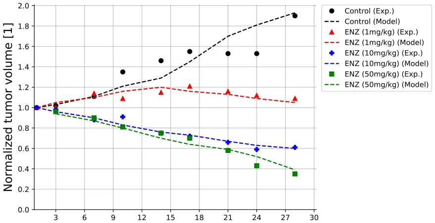
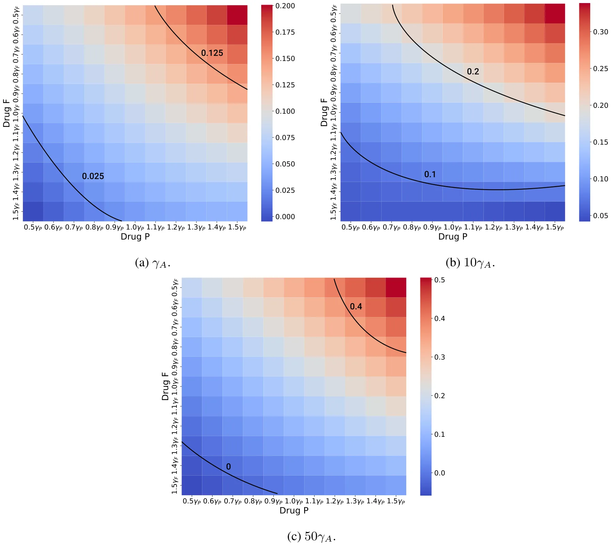
For Treatment I, 𝐹 is totally wasted in its role of eliminating senescent cells. In Treatment II, the pro-cancer senescent cells continue to be produced by 𝑃 for three consecutive weeks before 𝐹 begins to eliminate them; so 𝐹 is not as effective as it could be. In Treatment III, 𝐹 comes one week after 𝑃, which is a more effective use of it, while in Treatment IV, 𝐹 is administered in the same week as 𝑃 but a few days after 𝑃, so it should be even more effective.
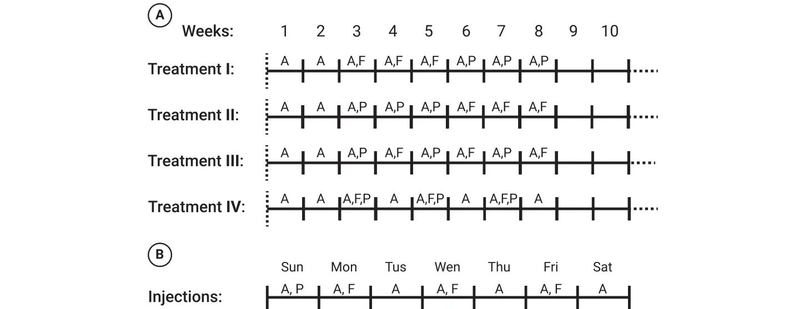
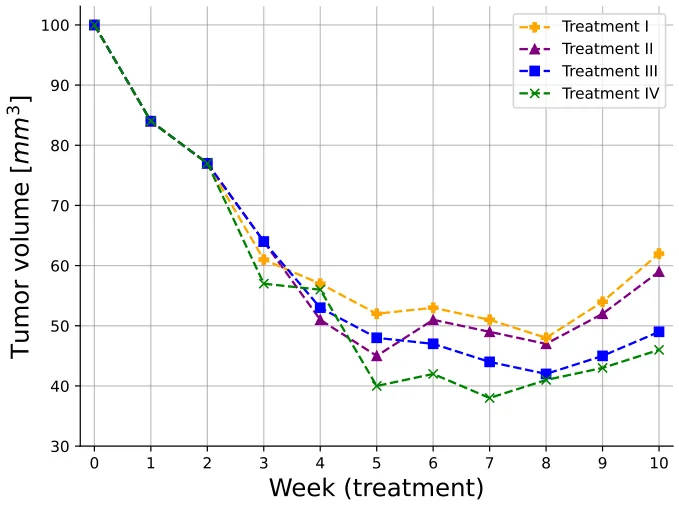
Fig. 6 shows that, indeed, Treatment IV yields the smallest tumor volume from week 5 onward; the anomaly around week 4 may be due to differences in the action dynamics of 𝑃 and 𝐹, or to the additional role of 𝐹 in clearing VEGF.
Fig. 7 shows color maps of tumor volume 𝑉 (̂𝛾𝑃, ̂𝛾𝐹), wherê 𝛾𝑃 and 𝛾𝐹 vary from 0.5 to 1.5 of 𝛾𝑃 and 𝛾𝐹, respectively, under treatment IV at the last day of week 10, with three fixed doses of ADT, 10𝛾𝐴, 30𝛾𝐴, 50𝛾𝐴 and 𝑉 (̂𝛾𝑃, ̂𝛾𝐹) decreases when̂ 𝛾𝑃 and̂ 𝛾𝐹 increase, and when the fixed ADT dose is increased, but the equi-volume curves are convex.
4. Conclusion
Senescence is a primary hallmark of aging, but in cancer it is also triggered by cells stress, tumor suppression of gene activation, and oncogene activity. Senolytic drugs eliminate senescent cells, and are expected to reduce the negative pro-cancer effects of senescent cancer cells. In this paper, we considered metastatic prostate cancer, commonly treated with ADT and chemotherapy, and added to this combination a senolytic drug. Specifically, we took Enzalutamide (ENZ) for ADT, Cabazitaxl (CBZ) for chemotherapy, and fisetin (F) for senolytic drug, and briefly set 𝐴 = ENZ and 𝑃 = CBZ.
ENZ and CBZ are standard drugs used in the treatment of metastatic prostate cancer, but fisetin has not been clinically used so far, and was only recently considered in experimental studies (Qaed et al., 2023; Mukhtar et al., 2016; Guerrero et al., 2013). The first question we wanted to address is what is the potential benefits we can expect, if any, by including 𝐹 in the combination of ENZ and CBZ. We assess the potential benefits in terms of synergy between 𝐹 and 𝑃, for any 𝐴.
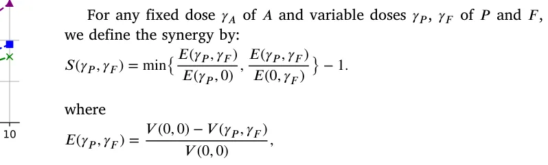
is the efficacy of (𝛾𝑃, 𝛾𝐹) and 𝑉 (𝛾𝑃, 𝛾𝐹) is the tumor volume by the end of the 10 weeks; in these definitions we take 𝑓𝐹 ,𝛼(𝑡) = 𝑓𝑃 ,𝛽(𝑡) = 𝑓𝐴,𝛾(𝑡) = 1.
In Fig. 4, we simulated three color maps of 𝑆(̂𝛾𝑃, ̂𝛾𝐹) for a range of̂ 𝛾𝑃 and of̂ 𝛾𝐹, for three values of the 𝐴 drug. We found that in all three maps, 𝑆(̂𝛾𝑃, ̂𝛾𝐹) is ‘‘mostly’’ positive and increasing when̂ 𝛾𝑃 and (̂𝛾𝐹) increase, but there were few exceptions, presumably due to the cooperative and antagonist actions of 𝐴 with respect to 𝑃 and 𝐹 in the equations of 𝐶 , 𝐶𝑟, and 𝐶𝑠. The synergy scores in Fig. 4 could be useful in the analysis of treatment by a combination of 𝑃 and 𝐹, under different doses of 𝐴. Since treatment with 𝑃 gives rise to senescent cancer cells while fisetin eliminates senescent cells, we hypothesize that, in optimal schedules of cancer treatment, 𝐹 should be administered immediately after treatment with 𝑃. We supported this hypothesis with a setup of four different treatments.
The model has several limitations:
- Since there is always uncertainty in estimating parameters, we included in the model only the most important biological entities that are needed to consider the effects of the three drugs (𝐴, 𝑃 , 𝐹) on reducing tumor volume. We naturally included 𝑇 cells that kill cancer cells and their activation by dendritic cells by secreting 𝐼12, and VEGF, which plays a central role in the interactions between cancer and 𝑃 and 𝐹; finally, we included
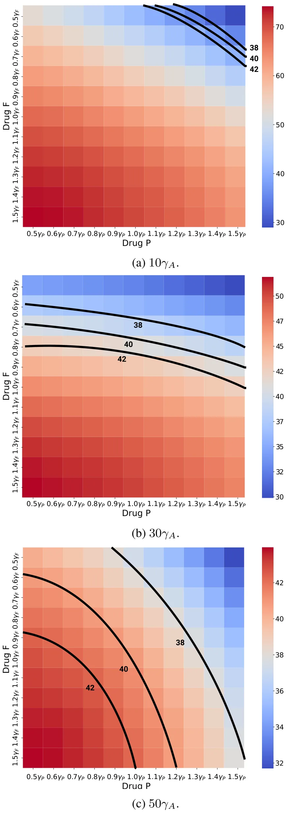
endothelial cells, and oxygen in order to express the angiogenesis effect of VEGF.
- The ‘‘minimal’’ model still has many parameters; some were estimated (under some assumptions) or directly determined from
previous biological papers, some were assumed for this paper, and the remaining parameters were derived by fitting to experiments with mice inoculated with prostate cancer cells, which were treated with A, P, and F.
- In order to simulate the dynamics of the cancer, in particular the movement of its boundary, we made the assumptions that the combined densities of all cells is constant in space and time (Eq. (1)), and that all cells move with same advection velocity.
- Since the space of initial conditions is high dimensional, we limited our simulation to one set of initial conditions (Eq. (26)) and 𝑅(0) = 0.05 cm. We expect a moderate change in the initial conditions will not significantly affect the results of the paper.
- We assumed that drugs action is linear (e.g. 𝐴𝐶, 𝑃 𝐶, 𝐹 𝐶𝑠), which is only justified under limited dosage.
- We made a simplified assumption on the PK profile of the drugs, assuming exponential decrease, for instance, 𝑒−𝛼 𝑡, where 𝛼 is the half-life of the drug.
A comprehensive review of prognostic implications of cellular senescence in many types of cancer is given in Domen et al. (2022), and comprehensive description of senolytic therapies is given in Schmitt et al. (2022). The methods developed in the present paper could be useful in the study of treatments and prognostics of other cancers with other combinations of chemotherapy and senolytic drugs.
CRediT authorship contribution statement
Teddy Lazebnik: Writing – review & editing, Visualization, Software, Methodology, Investigation, Formal analysis. Avner Friedman: Writing – original draft, Validation, Methodology, Investigation, Formal analysis, Conceptualization.
Declaration of competing interest
The authors declare that they have no known competing financial interests or personal relationships that could have appeared to influence the work reported in this paper.
Appendix A
Computational method: We employed the moving mesh method (Verwer and Sommeijer, 2004) in conjunction with a refined Explicit Runge–Kutta method of order 5(4), utilizing the Scipy library in Python (Langtangen and Logg, 2016). The method’s higher order (5(4)) signifies that it uses an embedded fourth-order method to estimate the error, facilitating adaptive step size adjustments to improve accuracy in solving PDEs. Notably, for free-boundary equations, the boundary is updated at each step of the Runge–Kutta method. The free boundary is moved from one step to the next by updating the position (𝑥) based on the velocity 𝑣(𝑥) and the time step ℎ. This process involves evaluating 𝑣(𝑥) at the boundary point and then shifting the boundary accordingly.
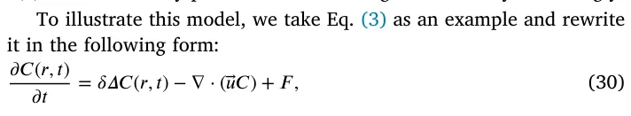
where 𝐹 represents the term on the right-hand side of Eq. (3). Let 𝑟𝑖 𝑘 and 𝑐𝑖 𝑘 denote numerical approximations of the 𝑖𝑡ℎ grid point and 𝐶(𝑟𝑖 𝑘, 𝑛𝜏), respectively, where 𝜏 is the time-step size. The discretization of Eq. (30) is derived using the fully implicit finite difference scheme obtained from the Runge–Kutta method mentioned above. The mesh moves according to 𝑟𝑖 𝑘+1 = 𝑟𝑖 𝑘 + 𝑢𝑖 𝑘+1𝜏 where 𝑢𝑖 𝑘+1 is determined by the velocity equation. To ensure the stability of the scheme, we take 𝜏 ≤ ℎ2∕4𝛿.
Appendix B
Parameter fitting procedure: To use the proposed model, biologically relevant parameter values must be identified. Initially, known parameters from the literature were used to estimate most values, as described in Table 2. For the remaining parameters, an equilibrium (steady state) analysis provided initial estimates. These values were refined using tumor volume data over time from (Mukhtar et al., 2016; Guerrero et al., 2013). A heuristic optimization process, combining the Monte Carlo and Genetic Algorithm (GA), was employed to fit the parameter values to the data.
Genetic algorithms (GAs) are optimization methods inspired by evolution, where solutions (chromosomes) achieving higher fitness function scores are more likely to be selected for the next generation (Holland, 1992). The algorithm involves mutation, crossover, and selection operators iteratively until a stopping condition is met, producing the chromosome with the highest fitness value as the output. In addition, the Monte Carlo (MC) method uses random sampling to approximate solutions to complex problems, particularly effective in high-dimensional spaces (Murtha, 1997).
Based on these two algorithms, the optimization process proceeds as follows: In the GA, a chromosome represents the parameter values to be fitted to biological data. The mutation operator randomly alters chromosome values, followed by the ring crossover operator (Davis, 1985) and the tournament with royalty selection operator (Bo et al., 2006). The fitness function, defined as the coefficient of determination between the model’s predicted cancer volume and the biological data, is calculated for each chromosome. The GA may converge to local minima, so the MC method is used alongside to achieve a more global minimum. The initial GA population is sampled from a pre-defined range, and the GA conducts searches for different initial conditions. The best result from all MC repetitions is taken as the final output, ensuring a more global minimum rather than a single GA run.
Appendix C
Sensitivity analysis : We performed sensitivity analysis with respect to tumor volume at day 15, using a set of parameters that represent production, proliferation, degradation, and killing rates. The computations were done using Latin Hypercube sampling/Partial Rank Correlation Coefficient (LHS/PRCC) with Matlab package (Marino et al., 2008; Kirschner et al., 2016). The range of parameters was ±50% their baseline in Table 2. We retained parameters exhibiting significant PRCC and 𝑝-value below 0.1.
Fig. 8 shows the results of this analysis for 𝑛 = 10, 000 samples in the control case, and Fig. 9 shows the results for 𝑛 = 10, 000 samples in the case of combined therapy, 𝐹 + 𝑃 + 𝐴.
Fig. 8 shows that 𝜆𝐶 𝑊 and 𝜆𝐶 𝐶𝑠 are positively correlated; indeed, if these parameters increase then, respectively, 𝐶, 𝐶𝑠 increase. The parameters 𝜆𝑊 𝐸 and 𝜆𝑉 𝑊 are also positively correlated, since if they increase then oxygen supply to the cancer cells increases. 𝑇 cells kill cancer cells, hence 𝜇𝑇 𝐶 is negatively correlated, and so is the growth rate 𝜆𝑇 of T. Since 𝐼 activates 𝑇 cells, 𝜆𝐼 𝐷 is negatively correlated, and 𝑑𝑇 𝐼 is positively correlated. If 𝜆𝐷 is increased then 𝐷 will increase, and so also 𝐼; hence 𝜆𝐷 is negatively correlated. Finally, 𝑑𝐸 𝑉 is positively correlated, since if it is increased then VEGF is decreased.
Fig. 9 shows that 𝜇𝐹, 𝜇𝑃, and 𝜇𝐴 are positively correlated. Indeed, when these parameters increase then the washout rates of the drugs increase, and the efficacy of drugs will be reduced. If 𝜇𝑃 𝑇 is increased then 𝑇 is decreased, and if 𝜇𝐹 𝑉 is increased then VEGF is decreased; hence both parameters are positively correlated. If 𝜆𝑃 𝐶𝑠, 𝜆𝐴𝐶𝑠, and 𝜆𝑃 𝐶 are increased then 𝐶𝑠 is increased, and if 𝜇𝐹 𝐶𝑠 is increased then 𝐶𝑠 is decreased, hence 𝜆𝑃 𝐶𝑠, 𝜆𝐴𝐶𝑆, and 𝜆𝑃 𝐶 are positively correlated while 𝜇𝐹 𝐶𝑠 is negatively correlated. Finally, the parameters 𝜇𝐶𝑠𝐹, 𝜇𝑉 𝑃, 𝜇𝐶 𝑃, 𝜇𝑇 𝑃, and 𝜇𝐶 𝐴 are positively correlated since if they increase then the drugs 𝐹 + 𝑃 + 𝐴 are decreased.
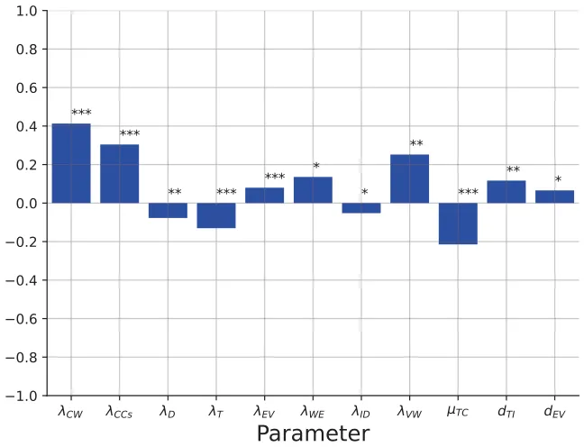
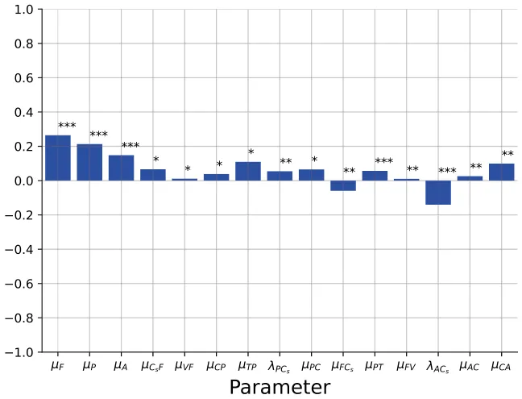
Article notes
- Publication history
- Received 15 July 2024 · Accepted 5 February 2025 · Published 18 February 2025
References
- Alzheimer’s Drug Discovery Foundation, 2018. Fisetin. Cognative Vitality. link
- Andren, O., Widmark, A., Falt, A., Ulvskog, E., Davidsson, S., Thellenberg Karlsson, C., Hjalm-Eriksson, M., 2017. Cabazitaxel followed by androgen deprivation therapy (ADT) significantly improves time to progression in patients with newly diagnosed metastatic hormone sensitive prostate cancer (mHSPC): A randomized, open label, phase III, multicenter trial. Ann. Oncol. 28. link
- Anon, 2024a. Cabazitaxel dosage. Drugs. Com. link
- Anon, 2024b. Enzalutamide (oral route). Mayo Clin.. link
- Blute, M.L., Jr., N., Wagner, J., Yang, B., Gleave, M., Fazli, L., Shi, F., Abel, E.J., Downs, T.M., Huang, W., Jarrard, D.F., 2017. Persistence of senescent prostate cancer cells following prolonged neoadjuvant androgen deprivation therapy. PLoS One 12 (2), e0172048. link
- Bo, Z.W., Hua, L.Z., Yu, Z.G., 2006. Optimization of process route by genetic algorithms. Robot. Comput.-Integr. Manuf. 22, 180–188. link
- Carmeliet, P., 2005. VEGF as a key mediator of angiogenesis in cancer. Oncology 69, 4–10. link
- Carpenter, V., Saleh, T., Min Lee, S., Murray, G., Reed, J., Souers, A., Faber, A.C., Harada, H., Gewirtz, D.A., 2021. Androgen-deprivation induced senescence in prostate cancer cells is permissive for the development of castration-resistance but susceptible to senolytic therapy. Biochem. Pharmacol. 193, 114765. link
- Chen, D., Rode, J.M., MArsh, C.B., Eubank, T.D., Friedman, A., 2012. Hypoxia inducible factors-mediated inhibition of cancer by GM-CSF: A mathematical model. Bull. Math. Biol. 74 (11), 2752–2777. link
- Das, R.K., O’Conner, R.S., Grupp, S.A., Barrett, D.M., 2020. Lingering effects of chemotherapy on mature T-cells impair proliferation. Blood Adv. 4. link
- Davis, L., 1985. Applying adaptive algorithms to epistatic domains. Proc. Int. Jt. Conf. Artif. Intell. 162–164. link
- Davis, I.D., 2022. Combination therapy in metastatic hormone-sensitive prostate cancer: is three a crowd? Ther. Adv. Med. Oncol. 29 (14). link
- Domen, A., Deben, C., Verswyvel, J., Flieswasser, T., Prenen, H., Peeters, M., Lardon, F., Wouters, A., 2022. Cellular senescence in cancer: clinical detection and prognostic implications. J. Exp. Clin. Cancer Res. 41, 360. link
- Ewald, J.A., Desotelle, J.A., Church, D.R., Yang, B., Huang, W., Laurila, T.A., Jarrard, D.F., 2013. Androgen deprivation induces senescence characteristics in prostate cancer cells in vitro and in vivo. Prostate 73 (4), 337–345. link
- Fan, Y., Cheng, J., Zeng, H., Shao, L., 2020. Senescen cell depletion through targeting BCL-family proteins and mitochondria. Front. Physiol.. link
- Ferre-Torres, J., Noguera-Monteagudo, A., Lopez-Canosa, A., Romero-Arias, J.R., Barrio, R., Castano, O., Hernandez-Machado, A., 2023. Modelling of chemotactic sprouting endothelial cells through an extracellular matrix. Front. Bioen. Biotechnol. 11, 1145550. link
- Forys, U., Nahshony, A., Elishmereni, M., 2022. Mathematical model of hormone sensitive prostate cancer treatment using leuprolide: A small step towards personalization. PLoS One 17 (2), e0263648. link
- Friedman, A., Hao, W., 2018. The role of exosomes in pancreatic cancer microenvironment. Bull. Math. Biol. 80, 1111–1133. link
- Gibbons, J.A., Ouatas, T., Krauwinkel, W., Ohtsu, Y., vad det Walt, J.-S., Beddo, V., de Vries, M., Mordenti, J., 2015. Clinical pharmacokinetic studies of enzalutamide. Clin. Pharmacokinet. 54, 1043–1055. link
- Guerrero, J., Alfaro, I.E., Gómez, F., Protter, A.A., Bernales, S., 2013. Enzalutamide, an androgen receptor signaling inhibitor, induces tumor regression in a mouse model of castration-resistant prostate cancer. Prostate 73 (12), 1291–1305. link
- Hao, W., Friedman, A., 2016. Serum uPAR as biomarker in breast cancer recurrence: A mathematical model. Plos One 11 (4), e0153508. link
- Henry, C.J., Ornelles, D.A., Mitchell, L.M., Brzoza-Lewis, K.L., Hiltbold, E.M., 2008. IL-12 produced by dendritic cells augments CD8+T cell activation through the production of the chemokines CCL1 and CCL171. J. Immunol. 181 (12). link
- Holland, J.H., 1992. Genetic algorithms. Sci. Am. 267 (1), 66–73. link
- Huang, W., Hickson, L.J., Eirin, A., Kirkland, J.L., Lerman, L.O., 2022. Cellular senescence: the good, the bad, and the unknown. Nat. Rev. Nephrol. 18, 611–627. link
- JEVTANA, 2010. Cabazitaxel. Cent. Drug Eval. Res. 201023, 1–71. link
- Kallenbach, J., Atri Roozbahani, G., Heidari Horestani, M., Baniahmad, A., 2022. Distinct mechanisms mediating therapy-induced cellular senescence in prostate cancer. Cell & Biosci. 12 (1), 200. link
- Karantanos, T., Corn, P.G., Thompson, T.C., 2013. Prostate cancer progression after androgen deprivation therapy: mechanisms of castrate resistance and novel therapeutic approaches. Oncogene 32 (49), 5501–5511. link
- Katongole, P., Sande, O.J., Nabweyambo, S., Joloba, M., Kajumbula, H., Kalungi, S., Reynolds, S.J., Ssebambulidde, K., Atuheirwe, M., Orem, J., Niyonzima, N., 2022. IL-6 and IL-8 cytokines are associated with elevated prostate-specific antigen levels among patients with adenocarcinoma of the prostate at the uganda cancer institute. Futur. Oncol. 18 (6), 661–667. link
- Kawata, H., Kamiakito, T., Nakaya, T., Komatsubara, M., Komatsu, K., Morita, T., Nagao, Y., Tanaka, A., 2017. Stimulation of cellular senescent processes, including secretory phenotypes and anti-oxidant responses, after androgen deprivation therapy in human prostate cancer. J. Steroid Biochem. Mol. Biology 165, 219–227. link
- Kirschner, H., Hilbert, K., Hoyer, J., Lueken, U., Beesdo-Baum, K., 2016. Psychophsyi-ological reactivity during uncertainty and ambiguity processing in high and low worriers. J. Behav. Ther. Exp. Psychiatry 50, 97–105. link
- Lai, X., Friedman, A., 2017. Combination therapy of cancer with cancer vaccine and immune checkpoint inhibitors: A mathematical model. Plos One 12 (5), e0178479. link
- Lai, X., Friedman, A., 2019. How to schedule VEGF and PD-1 inhibitors in combination cancer therapy? BMC Syst. Biology 13 (30). link
- Lai, X., Stiff, A., Duggan, M., Wesolowski, R., Carson III, W.E., Friedman, A., 2018. Modeling combination therapy for breast cancer with BET and immune checkpoint inhibitors. PNAS 115 (21), 5534–5539. link
- Langtangen, H.P., Logg, A., 2016. Solving PDEs in python. In: Simula SpringerBriefs on Computing, Springer Cham, XI, 146. link
- Liao, K.-L., Bai, X.-F., Friedman, A., 2014. Mathematical modeling of interleukin-27 induction of anti-tumor T cells response. Plos One 9 (3), e91844. link
- Lorenzo, G.D., Scafuri, L., Costabile, F., Pepe, L., Scognamiglio, A., Crocetto, F., Guerra, G., Buonerba, C., 2022. Fisetin as an adjuvant treatment in prostate cancer patients receiving androgen-deprivation therapy. Futur. Sci. OA 8 (3), FSO784. link
- Malayaperumal, S., Marotta, F., Kumar, M.M., Somasundaram, I., Ayala, A., Pinto, M.M., Banerjee, A., Pathak, S., 2023. The emerging role of senotherapy in cacner: A comprehensive review. Clin. Pr. 68, 838–852. link
- Marino, S., Hogue, I.B., Ray, C.J., Kirschner, D.E., 2008. A methodology for performing global uncertainty and sensitivity analysis in systems biology. J. Theoret. Biol. 254 (1), 178–196. link
- Mukhtar, E., Adhami, V.M., Siddiqui, I.A., Verma, A.K., Mukhtar, H., 2016. Fisetin enhances chemotherapeutic effect of cabazitaxel against human prostate cancer cells. Mol. Cancer Ther. 15 (12), 2863–2874. link
- Murtha, J.A., 1997. Monte Carlo simulation: Its status and future. J. Pet. Technol. 49 (04), 361–373. link
- Niederlova, V., Tsyklauri, O., Kovar, M., Stepanek, O., 2023. IL-2-driven CD8+T cell phenotypes: implications for immunotherapy. Trends Immunol. 44 (11), 890–901. link
- Pardella, E., Pranzini, E., Nesi, I., Parri, M., Spatafora, P., Torre, E., Muccilli, A., Castiglione, F., Fambrini, M., Sorbi, F., Cirri, P., Caselli, A., Puhr, M., Klocker, H., Serni, S., Raugei, G., Magherini, F., Taddei, M.L., 2022. Therapy-induced stromal senescence promoting aggressiveness of prostate and ovarian cancer. Cells 11 (24), 4026. link
- Park, K., Kim, J.Y., Park, I., Shin, S.H., Lee, H.J., Lee, J.L., 2023. Effectiveness of adding docetaxel to androgen deprivation therapy for metastatic hormone-sensitive prostate cancer in Korean real-world practice. Yonsei Med. J. 54 (2), 86–93. link
- Phan, T., Crook, S.M., Bryce, A.H., Maley, C.C., Kostelich, E.J., Kuang, Y., 2020. Review: Mathematical modeling of prostate cancer and clinical application. Appl. Sci. 10 (8), 2721. link
- Pungsrinont, T., Sutter, M.F., Ertingshausen, M.C.C.M., Lakshmana, G., Kokal, M., Khan, A.S., Baniahmad, A., 2020. Senolytic compounds control a distinct fate of androgen receptor agonist- and antagonist-induced cellular senescent LNCaP prostate cancer cells. Cell Biosci. 10 (59). link
- Qaed, E., Al-Hamyari, B., Al-Maamari, A., Qaid, A., Alademy, H., Almoiliqy, M., Munyemana, J.C., Al-Nusaif, M., Alafifi, J., Alyafeai, E., Safi, M., Geng, Z., Tang, Z., Ma, X., 2023. Fisetin’s promising antitumor effects: Uncovering mechanisms and targeting for future therapies. Glob. Med. Genet. 10 (3), 205–220. link
- Salim, S.S., Mureithi, E., Shabanm, N., Malinzi, J., 2021. Mathematical modelling of the dynamics of prostate cancer with a curative vaccine. Sci. Afr. 11, e00715. link
- Schmitt, C.A., Wang, B., Demaria, M., 2022. Senescence and cancer — role and therapeutic opportunities. Nat. Rev. Clin. Oncol. 19, 619–636. link
- Siewe, N., Friedman, A., 2022. Combination therapy for mCRPC with immune checkpoint inhibitors, ADT and vaccine: A mathematical model. PLoS One 17 (1), e0262453. link
- Slewe, N., Friedman, A., 2022. Optimal timing of steroid initiation in response to CTLA-4 antibody in metastatic cancer: A mathematical model. Plos One 17 (11), e0277248. link
- Sweeney, C.J., Chen, Y.-H., Carducci, M., Liu, G., Jarrard, D.F., Eisenberger, M., Wong, Y.N., Hahn, N., Kohli, M., Cooney, M.M., Dreicer, R., Vogelzang, N.J., Pi-cus, J., Shevrin, D., Hussain, M., Garcia, J.A., DiPaola, R.S., 2015. Chemohormonal therapy in metastatic hormone-sensitive prostate cancer. N. Engl. J. Med. 373 (8), 737–746. link
- Takahashi, S., Bhattacharjee, S., Ghosh, S., Sugimoto, N., Bhowmik, S., 2020. Preferential targeting cancer-related i-motif DNAs by the plant flavonol fisetin for theranostics applications. Sci. Rep. 10, 2504. link
- Underwood, R., 2023. What is fisetin? Benefits, dosage, and risks. VitalityPro. link
- Verwer, J.G., Sommeijer, B.P., 2004. An implicit-explicit Runge–Kutta–Chebyshev scheme for diffusion-reaction equations. SIAM J. Sci. Comput. 25 (5), 1824–1835. link
- Viallard, J.F., Pellegrin, J.L., Ranchin, V., Schaeverbeke, T., Dehais, J., Longy- Boursier, M., Ragnaud, J.M., Leng, B., Moreau, J.F., 1999. Th1 (IL-2, interferon-gamma (IFN-gamma)) and Th2 (IL-10, IL-4) cytokine production by peripheral blood mononuclear cells (PBMC) from patients with systemic lupus erythematosus (SLE). Clin. Exp. Immunol. 115 (1), 189–195. link
- Wang, B., Kohil, J., Demaria, M., 2020. Senescent cells in cancer therapy: Friends or foes. Trends Cancer 6 (10), 838–857. link
- Wyld, L., I., B., Tchkonia, T., Morgan, J., Turner, O., Foss, F., George, J., Danson, S., Kirkland, J.L., 2020. Senescence and cancer: A review of clinical implications of sensescence and senotherapies. Cancers. link
- Xu, M.Y., Xia, Z.Y., Sun, J.X., Liu, C.Q., An, Y., Xu, J.Z., Zhang, S.H., Zhong, X.Y., Zeng, N., Ma, S.Y., He, H.D., Wang, S.G., Xia, Q.D., 2024. A new perspective on prostate cancer treatment: the interplay between cellular senescence and treatment resistance. Front. Immunol. 15, 1395047. link
- Yang, J., Liu, M., Hong, D., Zeng, M., Zhang, X., 2021. The paradoxical role of cellular senescence in cancer. Front. Cell Dev. Biol. 722205. link
- Zhang, J., Cunningham, J., Brown, J., Gatenby, R., 2022. Evolution-based mathematical models significantly prolong response to abiraterone in metastatic castrate-resistant prostate cancer and identify strategies to further improve outcomes. ELife 11, e76284. link
- Zhou, C., Huang, Y., Nie, S., Zhou, S., Gao, X., Chen, G., 2023. Biological effects and mechanisms of fisetin in cancer: a promising anti-cancer agent. Eur. J. Med. Res. 28, 297. link
- Zhu, Y., Doornebal, E.J., Pirtskhalava, T., Giorgadze, N., Wentworth, M., Fuhrmann- Stroissnigg, H., Neidernhofer, L.J., Robbins, P.D., Tchkonia, T., Kirkland, J.L., 2017. New agents that target senescent cells: the flavone, fisetin, and the BCL-XL inhibitors, A1331852 and A1155463. Aging 9. link
This page reproduces the article Lazebnik et al. (2025), Journal of Theoretical Biology, doi:10.1016/j.jtbi.2025.112069, with the permission of the publisher. Text, tables and figures were extracted from the PDF and the layout adapted for the web; the PDF is the version of record.